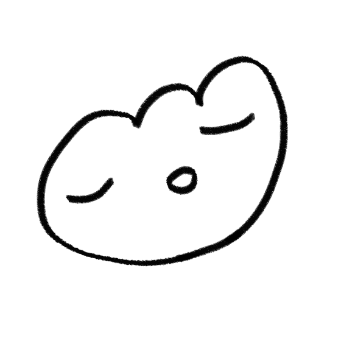

＊*•̩̩͙✩•̩̩͙*˚　about me　˚*•̩̩͙✩•̩̩͙*˚＊
＊*•̩̩͙✩•̩̩͙*˚　about me　˚*•̩̩͙✩•̩̩͙*˚＊

Hello! My name is soda (or meirisoda, or mei).
I use she/her pronouns and I am very gay :3
I'm an interdisciplinary artist whose focus is to find closure and healing through art and music.
I typically create illustrations (mostly ink and digital; if you look at my digital art, a lot of it is linework). The meaning of my art is up to your interpretation - my art is a way for me to put my emotions onto paper.
I also frequently dabble in writing, graphic design, tattooing, webdev (like this website!) and music. I play the bass guitar, piano and a little bit of guitar, and I like recording improv at random times because I feel that it conveys my emotions better than if I were to sit down and compose something.
If it wasn't clear enough, a lot of what I create is a way for me to come to terms with my thoughts and emotions.


| likes |
dislikes |
- tattoos
- Fate/Grand Order
- music
(japanese post-rock,
artcore, minimalism, IDM)
- 2000s nostalgia
|
- people who aren't accepting
or understanding
- homophobia, racism
(see above)
|
english, í•œêµì–´ (ä¸æ–‡, 日本語) OK
about me | links | about the site
© 2015-2022 meirisoda. All the rights to the original artworks and text belong to soda.
No reproduction or republication without written permission.